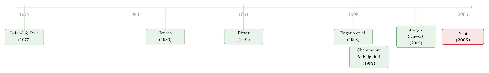

<!DOCTYPE html>
<html lang="en">
<head>
<meta charset="utf-8">
<meta name="viewport" content="width=device-width, initial-scale=1">
<title>上市不是终点，是一份你随时可以「赎回」的期权 – Jun He</title>
<style>
  @font-face {
    font-family: 'STIX Two Text';
    font-style: normal;
    font-weight: 400;
    font-display: swap;
    src: url(https://fonts.gstatic.com/s/stixtwotext/v12/YA9Gr02F12Xkf5whdwKf11l0p7uWhf8lJUzXZT2omsvbURVuMkWDmSo.woff2) format('woff2');
  }
  @font-face {
    font-family: 'STIX Two Text';
    font-style: normal;
    font-weight: 500;
    font-display: swap;
    src: url(https://fonts.gstatic.com/s/stixtwotext/v12/YA9Gr02F12Xkf5whdwKf11l0p7uWhf8lJUzXZT2omsvbURVuMkWDmSo.woff2) format('woff2');
  }
  @font-face {
    font-family: 'STIX Two Text Fallback';
    src: local('Times New Roman');
    ascent-override: 72.67%;
    descent-override: 22.7%;
    line-gap-override: 23.84%;
    size-adjust: 104.86%;
  }
</style>
<link rel="stylesheet" href="/styles.css?v=10">
<link rel="stylesheet" href="/article.css?v=11">

</head>
<body>

<header class="site-header">
  <nav>
    <a href="/" class="nav-name">Jun He</a>
    <a href="/posts">Post</a>
    <a href="/research">Research</a>
    <a href="/note">Note</a>
    <a href="/data">Data</a>
    <a href="/bergen">Bergen</a>
  </nav>
  <button class="theme-toggle" aria-label="Toggle theme" onclick="toggleTheme()">🌞</button>
</header>

<article class="article-layout" data-section="research">
  
  <div class="article-main">
    <div class="article-header">
      <h1>上市不是终点，是一份你随时可以「赎回」的期权</h1>
      
      
      <div class="paper-source">
        <div class="paper-source-title"><span class="paper-source-tag">[2005 JFE]</span> The Timing of Initial Public Offerings</div>
        <div class="paper-source-authors"><a href="/research/author/simon-benninga/">Simon Benninga</a>, <a href="/research/author/mark-helmantel/">Mark Helmantel</a>, <a href="/research/author/oded-sarig/">Oded Sarig</a></div>
      </div>
      
      <div class="article-meta">
        <span>Jun He</span>
        <span>June 01, 2026</span>
      </div>
      
      <div class="article-tags">
        
        
        
        <span class="tag">公司金融</span>
        
        
        
        
        <span class="tag">IPO</span>
        
        
        
        
        <span class="tag">实物期权</span>
        
        
        
        
        <span class="tag">资产定价</span>
        
        
      </div>
      
    </div>

    <div class="callout"><div class="callout-title">Note</div><p>本文读的是 <strong>Benninga, Helmantel &amp; Sarig (2005, <em>Journal of Financial Economics</em>)</strong>：把「上市还是私有」从一道单选题，改写成一份可以反复行权的期权。一旦你接受「公司每一期都能重新决定要不要上市」，那么 IPO 扎堆、行业集中、上市没多久又被买回去、以及新股长期跑输大盘——这四件看上去八竿子打不着的怪事，竟然全都从同一个价值函数里掉了出来。</p></div>
<h2 id="1">1 一个被「拍扁」成单选题的决策</h2>
<p>为什么企业家要把自家公司的股份卖给公众？</p>
<p>教科书会给你一长串答案。为投资项目融资（可银行贷款和私募股权同样能办到，而且 Pagano, Panetta &amp; Zingales (1998) 发现公司投资在 IPO 之后反而下降了）；让更分散的投资者来定价，因为他们愿意出比「身家全压在一家公司上的创业者」更高的价（Leland &amp; Pyle, 1977）；引入投行、审计师、分析师的外部监督来提升价值（Holmström &amp; Tirole, 1993）；让股价替管理层「读出」市场对公司的估值，用于日后的投资与薪酬（Benveniste &amp; Spindt, 1989）……</p>
<p>这些故事各有各的道理，但它们有一个共同的、几乎没人点破的毛病：<strong>都把「要不要上市」当成了一次性的、打一枪就没下文的决策。</strong> 企业家好像一辈子只有一次机会，权衡完上市的好处和坏处，拍板，然后故事就结束了。</p>
<p>可现实显然不是这样。今天选择不上市，并不会消灭明天上市的可能；今天上了市，将来也照样能通过管理层收购 (management buyout, MBO)、杠杆收购 (leveraged buyout, LBO)、或者干脆被另一家公司买走，重新变回私有。<strong>「上市」从来不是一道单选题，而是一个可以反复开关的阀门。</strong></p>
<p>本文要做的，就是把被拍扁成单选题的这个决策，重新立起来——给它加回时间这个维度。一旦加回去，问题的性质就彻底变了：它不再是一次静态的成本收益对比，而成了一个<strong>最优停时 (optimal timing)</strong> 问题。而最优停时，正是金融学最熟悉的语言——<strong>期权</strong>。</p>
<h2 id="2">2 把上市与私有的取舍写成一个状态价格的差</h2>
<p>要把故事讲清楚，作者先做了一个干净利落的抽象：<strong>只谈所有权，不谈投资。</strong> 假设无论公司是公是私，它都会做完全相同的投资，产生完全相同的一串现金流。这样一来，唯一在变的就是「谁来持有这些现金流」。</p>
<p>现金流用一个最简单的二叉树 (binomial) 来刻画：若 \(t\) 期现金流为 \(CF\)，则 \(t+1\) 期要么涨到 \(uCF\)，要么跌到 \(dCF\)，其中 \(u > d\)。模型是无限期的，\(u\)、\(d\) 与时间和状态都无关。</p>
<p>接着是全文最精巧的一步：<strong>用一对状态价格 (state prices) 来同时刻画「上市的好处」与「私有的好处」。</strong> </p>
<p>公司私有时，现金流由企业家自己来估值，用的是私有状态价格 \(p_u\)（涨）和 \(p_d\)（跌）；公司上市时，现金流由市场来估值，用的是公开状态价格 \(q_u\) 和 \(q_d\)。因为无论谁都能投资无风险资产，两组状态价格之和必须相等：</p>
<p>$$p_u + p_d = q_u + q_d = \frac{1}{1+r} \equiv \frac{1}{R}$$</p>
<p>这里 \(R \equiv 1+r\) 是无风险毛收益率。真正的关键假设只有一句话：</p>
<p>$$p_u < q_u, \qquad p_d > q_d$$</p>
<p>这两个不等式，把「企业家不够分散、投资者足够分散」这件事，干净地压缩成了一个<strong>价差</strong>。直觉是这样的：在「涨」的状态里，企业家手里的消费「太多了」（身家都压在公司上），他很想卖掉一些，但卖掉就要放弃私有控制权的好处，所以他对涨状态现金流的私有定价 \(p_u\) 偏低；反过来在「跌」的状态里他消费「太少」，因此格外珍惜那一份现金流，私有定价 \(p_d\) 偏高。而分散的投资者对涨跌没有这种偏执，定价更「平」。</p>
<p>把状态价格乘上涨跌幅，就得到了两个<strong>确定性等价 (certainty equivalent)</strong>：</p>
<p>$$\text{CE}^{\text{Private}} \equiv p_u u + p_d d, \qquad \text{CE}^{\text{Public}} \equiv q_u u + q_d d$$</p>
<p>它们分别是「一单位下期不确定现金流，折算成今天的确定现金流」在私有、公开两种眼光下的价值。论文的引理 (Lemma) 一句话就证完了：因为 \(q_u - p_u = p_d - q_d > 0\) 且 \(u > d\)，必有 \((q_u-p_u)u > (p_d-q_d)d\)，整理即得</p>
<p>$$\text{CE}^{\text{Private}} < \text{CE}^{\text{Public}}$$</p>
<p><strong>公开市场对同一串风险现金流的估值，永远高于企业家自己的估值。</strong> 这就是「上市的好处」的全部来源——更分散的投资者愿意为风险付更高的价。</p>
<p>那「私有的好处」呢？作者用一个常数 \(PB\)（private benefits of control）把它一锅端了：私有控制权的享受、省下的上市合规与披露成本、不必把内部信息暴露给竞争对手的好处……全都装进 \(PB\)。这其实是对 Jensen (1986) 那条「自由现金流代理成本」之外的另一面的概括（关于 Jensen 那一面，可参见<a href="/research/agency-cost-of-free-cash-flow-capital-allocation-and-payouts/">《现金为什么一定要「还」出去？——四十年后，重读 Jensen 的自由现金流》</a>）。</p>
<div class="callout"><div class="callout-title">Tip</div><p>别小看 \(PB\) 这个「上市要付出的代价」。作者用 Compustat 数据算过一笔实账：公司从 IPO 前一年到后一年，销售管理费用 (SG&amp;A) 平均增加了 `\(62 million`，统计上极显著（`p` 值 0.002%），且无法用 IPO 后的销售增长来解释，恰好略高于平均利润的 10%。一家私下报告给作者的 PWC Global (2000) 研究，也把「上市的直接成本」估在 IPO 时点利润的约 10%。\)PB$ 不是空中楼阁。</p></div>
<h2 id="3">3 价值函数：一个藏在贝尔曼方程里的期权</h2>
<p>现在把动态装回来。模型是平稳、无限期的，所以公司价值只是当期现金流的一个函数 \(V(CF)\)。</p>
<p>在 \(t\) 期拿到现金流（私有时还额外拿到 \(PB\)）之后，企业家要决定下一期公司是公是私。如果选择继续私有，他下一期的回报在涨状态是 \(uCF + PB + V(uCF)\)、跌状态是 \(dCF + PB + V(dCF)\)，用私有状态价格折现，得到</p>
<p>$$V^{\text{Private}}(CF) = \text{CE}^{\text{Private}} CF + \frac{PB}{R} + p_u V(uCF) + p_d V(dCF)$$</p>
<p>如果选择上市，没有了 \(PB\)，且用公开状态价格折现：</p>
<p>$$V^{\text{Public}}(CF) = \text{CE}^{\text{Public}} CF + q_u V(uCF) + q_d V(dCF)$$</p>
<p>而企业家在每一期都取两者中较大的那个。于是公司价值满足这样一个<strong>贝尔曼方程</strong>——这是全文的引擎，值得我们把它的每一块拆开来看：</p>
<div class="mathanno-block"><div class="mathanno-eq">$$
V(CF) = \max\Big\{\; \cssId{a1}{\text{CE}^{\text{Public}} CF + q_u V(uCF) + q_d V(dCF)}\;,\;\; \cssId{a2}{\text{CE}^{\text{Private}} CF} + \cssId{a3}{\tfrac{PB}{R}} + \cssId{a4}{p_u V(uCF) + p_d V(dCF)} \;\Big\}
$$</div><aside class="mathanno-cards"><div class="mathanno-card" data-target="a1"><span class="mathanno-num">1</span>选择「上市」一支：当期现金流的公开估值，加上用公开状态价格折现的延续价值</div><div class="mathanno-card" data-target="a2"><span class="mathanno-num">2</span>选择「私有」一支里，当期现金流的私有估值（CEPrivate &lt; CEPublic，所以这一块更小）</div><div class="mathanno-card" data-target="a3"><span class="mathanno-num">3</span>这一期私有控制权收益的现值——上市要放弃的，就是它</div><div class="mathanno-card" data-target="a4"><span class="mathanno-num">4</span>私有一支的延续价值，用私有状态价格 p_u、p_d 折现</div></aside><svg class="mathanno-lines"></svg></div>

<p>因为 \(\text{CE}^{\text{Public}}\)、\(q_u\)、\(q_d\)、\(\text{CE}^{\text{Private}}\)、\(1/R\)、\(p_u\)、\(p_d\) 全都小于 1，这组方程定义了一个<strong>压缩映射 (contraction)</strong>，所以唯一的价值函数一定存在。</p>
<p>接着，作者用一组干净的命题把 \(V(CF)\) 的形状勾了出来。先看两端的渐近性质（命题 1）：</p>
<ul>
<li>永远上市的公司，价值是 \(\dfrac{\text{CE}^{\text{Public}}}{1-\text{CE}^{\text{Public}}}\,CF\)；</li>
<li>永远私有的公司，价值是 \(\dfrac{\text{CE}^{\text{Private}}}{1-\text{CE}^{\text{Private}}}\,CF + \dfrac{PB}{r}\)；</li>
<li>由引理可知，「永远上市」那条线的斜率比「永远私有」那条更陡；</li>
<li>当现金流为零时，公司必然私有，价值等于 \(V(0) = PB/r\)。</li>
</ul>
<p>再看整体（命题 2）：<strong>\(V(CF)\) 连续、递增，且关于 \(CF\) 是凸的 (convex)。</strong> 证明走的是归纳法——定义一个固定期限 \(n\) 的函数 \(W(CF,t,n)\)，它在最后一期是两个线性函数取大，必凸；而「两个凸函数取大」仍然凸，于是逐期往回推，凸性一路保持；最后让 \(n \to \infty\)，\(V\) 作为 \(W\) 的极限继承了凸性。</p>
<p>把这几条拼起来，\(V(CF)\) 长什么样就清楚了：<strong>它看上去就像一份看涨期权 (call option)，标的是公司现金流的「公开价值」，再整体向上平移了 \(PB/r\)。</strong> 在低现金流处，曲线贴着「永远私有」那条平缓的线（斜率小，外加 \(PB/r\) 的截距）；在高现金流处，曲线贴着「永远上市」那条更陡的线。换个等价的说法更妙：</p>
<p>$$V(CF) = \underbrace{\text{永远上市的现金流价值}}_{\text{always public}} + \underbrace{\text{一份看跌期权}}_{\text{put option}}$$</p>
<p>这份看跌期权，就是企业家「在现金流跌下来时，把公司重新私有化、夺回 \(PB\) 这股私有收益流」的权利。<strong>整篇论文的所有结论，都将从这份看跌期权里长出来。</strong></p>
<h2 id="4-cf">4 一个临界现金流 \(CF^*\)，与它带来的「单调世界」</h2>
<p>凸性带来一个极其干净的推论。命题 3 说：如果在现金流 \(CF\) 处「私有」是最优的，那么对任何更低的现金流 \(X < CF\)，私有也一定是最优的。命题 4 是对称的：如果在 \(CF\) 处「上市」最优，那么对任何更高的 \(Y > CF\)，上市也一定最优。</p>
<p>证明的核心，是把「私有更优」这个条件改写成一句话——令 \(D \equiv q_u - p_u = p_d - q_d > 0\)，则 \(V(CF)\) 私有当且仅当</p>
<p>$$\Big(\text{CE}^{\text{Public}} - \text{CE}^{\text{Private}}\Big) CF + D\big[V(uCF) - V(dCF)\big] < \frac{PB}{R}$$</p>
<p>读出来就是：<strong>当上市带来的分散化收益（既包括当期现金流、也包括对下期价值的影响），小于这一期要放弃的私有收益时，就该私有。</strong> 现金流越低，左边越小，这个不等式越容易成立——再加上 \(V\) 的凸性保证了 \(D[V(uX)-V(dX)]\) 随 \(X\) 递增，单调性就成立了。</p>
<p>于是世界被一刀切成两半：<strong>存在一个临界现金流 \(CF^*\)，现金流升到它之上公司就上市，跌到它之下就被重新私有化。</strong> \(CF^*\) 正是「下一期作为上市公司的价值」恰好等于「作为私有公司的价值」的那个现金流。由于所有参数都不随时间变，\(CF^*\) 也是个常数。</p>
<p>这个简单的门槛结构，立刻就解释了第一组经验事实。</p>
<h2 id="5">5 反转：四个怪现象，一个价值函数</h2>
<p>现在到了把这份期权「兑现」成经验含义的时候。</p>
<p><strong>首先是 IPO 的扎堆。</strong> 业内管它叫「热发行市场」(hot issue markets, Ritter, 1984)。在本模型里，公司只在现金流高于 \(CF^*\) 时上市，而企业的现金流在横截面上是相关的——尤其在同一行业内部高度相关。于是一旦某个行业景气、现金流集体抬升，这个行业的公司就会一窝蜂越过 \(CF^*\) 同时上市。这既解释了<strong>IPO 在时间上的聚集</strong>，也解释了<strong>IPO 浪潮为何往往被某些行业主导</strong>，还解释了<strong>IPO 潮为何与高股价同时出现</strong>（高现金流 → 高估值）。重要的是，这些结论根本不需要指定涨跌的概率，也就是说，<strong>不需要假设这些行业有更好的投资机会</strong>——这恰好呼应了 Loughran, Ritter &amp; Rydqvist (1994) 的发现：热发行市场之后并没有伴随投资的增长。</p>
<div class="callout"><div class="callout-title">Note</div><p>把 IPO 扎堆解释成「价值阀门被同时推开」，是一条与「投行分摊信息成本」「同行相互模仿」并行的机制。关于 IPO 浪潮的其他理论视角，可参见<a href="/research/a-theory-of-ipo-waves/">《新股的「冷热」，其实是投行在替你算的一笔账》</a>；关于 IPO 决策里的同行效应，可参见<a href="/research/ipo-peer-effects/">《对手刚上市，我要不要也赶紧上？》</a>。</p></div>
<p><strong>接着，一个对称的推论是反私有化。</strong> 当市场对预期现金流的估值低到撑不起上市成本时，公司就跌回 \(CF^*\) 之下，被买回去变私有。与 IPO 同理，<strong>反私有化也会扎堆、被某些行业主导、并与低股价同时出现</strong>。这与 Halpern, Kieschnick &amp; Rotenberg (1999) 关于杠杆式私有化交易的证据一致。</p>
<p><strong>但真正关键、也最漂亮的一步，是长期跑输之谜。</strong> Ritter (1991) 记录、至今没有定论的一个谜：新上市股票的长期收益显著低于同期市场。Fama &amp; French (2001) 报告，1980–2000 年间，所有新上市公司在上市后五年的平均超额收益为负；即便只看存活下来的新上市公司，按市值加权的超额收益在头三年也是负的。</p>
<p>这篇论文给出的解释，干净得近乎优雅——而且它<strong>直接落在那份看跌期权上</strong>。</p>
<p>命题 7 算出了公司收益率的方差：</p>
<p>$$\text{Var}(r_s) = p(1-p)\left(\frac{V(uCF) - V(dCF)}{V(CF)}\right)^2$$</p>
<p>并证明它<strong>随现金流 \(CF\) 递增</strong>。证明用的还是凸性：凸函数让 \(\frac{V(uCF)-V(dCF)}{V(CF)}\) 随 \(CF\) 上升，因为可以证明 \(V(X)/X\) 随 \(X\) 单调下降。直觉是：那份「重新私有化」的看跌期权，给股东提供了<strong>下行保护</strong>，而这份保护在低现金流时按比例更值钱、在高现金流时几乎没用。所以<strong>现金流越低，期权占公司价值的比重越大，下行越被托住，收益方差就越小。</strong></p>
<p>把这一条接到经验上：<strong>刚上市的「年轻」公司，现金流刚刚越过 \(CF^*\)，离门槛很近，那份看跌期权占它价值的比重大，因此风险低</strong>；而上市已久的「年长」公司，现金流早已长得很高，期权占比小，风险高。低风险 → 低（预期与实现）收益。于是——<strong>新股长期跑输，不是市场犯了错，而是一道风险更低、收益自然更低的算术题。</strong> 这与 Eckbo &amp; Norli (2000) 的实证完全对得上：IPO 公司风险更低、收益也更低。</p>
<div class="callout"><div class="callout-title">Tip</div><p>「上市后跌跌不休其实是一道算术题」这个思路，并非这一篇独有。关于用「内生事件 + 选择效应」来解构长期收益的另一条路径，可参见<a href="/research/endogenous-events-and-long-run-returns/">《为什么「上市后跌跌不休」可能是一道算术题？》</a>。两者都在提醒：当「上市」这个事件本身是被某种状态挑选出来的，事件后的收益就不能再天真地拿来当「异常」看。</p></div>
<p>最后，命题 8 给了一个让公司价值平均上升的充分条件：若 \(pu + (1-p)d \geq 1\)，则 \(pV(uCF) + (1-p)V(dCF) > V(CF)\)，即资本利得意义上的预期收益为正。证明同样只用了 \(V\) 的凸性。</p>
<h2 id="6">6 文献脉络</h2>
<p>把这篇论文放回它所在的那条线上，脉络是很清楚的。</p>
<p>最早，<strong>Leland &amp; Pyle (1977)</strong> 奠定了「上市的好处来自分散化与信号」的微观基础——这正是本文 \(p < q\) 那个价差的思想源头。<strong>Jensen (1986)</strong> 则从另一侧把「私有的好处/上市的代价」摆上了台面：分离所有权与控制权的代价、自由现金流的代理成本，全被本文压进了那个常数 \(PB\)。</p>
<p>然后，实证这边攒下了一堆「待解释」的事实：<strong>Ritter (1984)</strong> 命名了热发行市场，<strong>Ritter (1991)</strong> 记录了长期跑输之谜，<strong>Pagano, Panetta &amp; Zingales (1998)</strong> 用意大利数据系统地问「公司为什么上市」并发现 IPO 后投资不升反降，<strong>Lowry &amp; Schwert (2002)</strong> 刻画了 IPO 的市场周期。</p>
<p>理论这边，<strong>Chemmanur &amp; Fulghieri (1999)</strong> 提出了一个「上市与否取决于信息成本最小化」的静态理论。这一系列工作的共同短板，前面已经说过——<strong>都是单次决策</strong>。</p>
<figure class="article-image timeline-figure">

<figcaption>文献脉络时间线（按发表年份排布；红色为本文）</figcaption>
</figure>

<p><strong>Benninga, Helmantel &amp; Sarig (2005)</strong> 的位置，就是给这条线补上「时间」这一维：把上市/私有写成一个可反复行权的期权，让上面那一串原本各自为政的事实，从同一个价值函数里一次性掉出来。它唯一明确点名的「同类」是 Maksimovic &amp; Pichler (2001)——但后者的 IPO 时机由技术标准的确立驱动，而本文刻意研究<strong>与技术变迁无关</strong>的时机，并且额外把「反私有化的期权」也纳了进来。</p>
<h2>7 评论与延伸（Q&amp;A + 研究方向）</h2>
<h3 id="a">(a) 几个可能的疑问</h3>
<p><strong>Q：这模型连「概率」都没用到，凭什么能讲出这么多结论？</strong></p>
<blockquote>
<p>这恰恰是它的精巧之处。临界现金流 \(CF^*\) 的存在、价值函数的凸性、单调性（命题 3–6）都只依赖状态价格的排序 \(p_u<q_u,\,p_d>q_d\) 和 \(u>d\)，完全不需要指定涨跌概率（即不需要任何关于公司活动预期收益的设定）。概率只在最后讲「收益方差」和「预期收益为正」（命题 7、8）时才登场。结论的稳健性来自结构，而非来自对概率的精调。</p>
</blockquote>
<p><strong>Q：把上市的全部好处压成「投资者出价更高」、把全部代价压成一个常数 \(PB\)，会不会太粗暴？</strong></p>
<blockquote>
<p>作者是有意为之，并讲明白了：更高的公开估值在模型里<strong>代表</strong>了上市的一切好处——流动性、监督价值、股价信息；\(PB\) 则<strong>代表</strong>了一切私有的好处与上市的代价。这是一种「化约式 (reduced-form)」处理，目的是把焦点全部压在「上市时机」这一个维度上。代价是：模型没法区分这些好处各自的贡献，也无法讨论它们之间的互动。</p>
</blockquote>
<p><strong>Q：模型假设反私有化时企业家要付「全额私有价值」（即在公开价值之上再付溢价），这合理吗？</strong></p>
<blockquote>
<p>作者用搭便车与套牢问题（Grossman &amp; Hart, 1980）来justify：要从分散的公众股东手里收回控制权，本来就得付溢价。脚注里也说明，换成「谈判分割差价」之类的其他设定，并不改变结论。这是个为了闭合模型而做的简化，但不是结论的命门。</p>
</blockquote>
<p><strong>Q：「新股跑输是因为风险低」——这和「市场对新股过度乐观、随后失望」的行为派解释，谁对？</strong></p>
<blockquote>
<p>本文提供的是一个<strong>纯理性、纯风险</strong>的解释：年轻公司因为那份反私有化看跌期权占比更大，下行被托住，所以 beta 更低、收益更低。它不需要任何投资者犯错。它与行为派解释在观测上往往难以区分，但本文的版本有一个可检验的硬含义——<strong>新上市公司的收益方差应当系统性低于上市已久的公司，且这种差距随上市年限收敛</strong>。Eckbo &amp; Norli (2000) 的证据支持风险派这一边。</p>
</blockquote>
<p><strong>Q：模型说「现金流越高、收益方差越大」，这是不是和直觉反着来？</strong></p>
<blockquote>
<p>表面上反直觉，根子在那份看跌期权。期权是下行保护，在现金流低时按比例最值钱；现金流越高，保护越「用不上」，公司价值就越接近一个无保护的纯权益，方差自然越大。换句话说，<strong>是期权的「保险」在低现金流端压低了方差</strong>，而不是高现金流本身制造了波动。</p>
</blockquote>
<p><strong>Q：现实里上市/私有有大笔交易成本，模型忽略了它，会翻盘吗？</strong></p>
<blockquote>
<p>不会翻盘，但会「钝化」。作者在脚注里说明：加入转换成本会制造一个「不作为区间 (region of inaction)」——现金流要明显越过 \(CF^*\) 才上市、明显跌破才私有，中间一段按兵不动。这只是把一条门槛变成一条带，结论的方向不变（含交易成本的证明作者称可索取）。</p>
</blockquote>
<h3 id="b">(b) 几个可能的研究问题与提案</h3>
<p><strong>1. 把「反私有化看跌期权」搬到公司债定价里。</strong>
【经济故事】本文的核心是：年轻上市公司因为「能被买回去」而风险更低。那么这份期权对<strong>债权人</strong>意味着什么？反私有化往往伴随 LBO，杠杆骤升、信用利差跳扩——对股东是看跌期权，对老债主可能是一颗雷。把 \(CF^*\) 门槛结构嵌进结构化信用模型，可以预测「上市年限」与「信用利差」「评级迁移」的关系。
【可行性】中。需要 TRACE 公司债成交 + 上市/退市日期 + LBO 事件库（Capital IQ / SDC）。识别上可用「现金流相对行业 \(CF^*\) 的距离」做横截面排序，难点是 \(CF^*\) 不可直接观测，需校准或用代理变量。</p>
<p><strong>2. 用本文的方差含义，做一个「上市年限—特质波动率」的干净检验。</strong>
【经济故事】命题 7 给出一个尖锐、可证伪的预测：收益方差随现金流（也即随上市年限）单调上升，且年轻公司更低。这与「新上市公司高特质波动」的流行印象<strong>正好相反</strong>，值得直接对账。
【可行性】高。CRSP 全样本即可，按上市年限分组算实现波动率与 beta，控制规模、行业、账面市值比。数据与识别都现成，是个低成本、高信息量的检验。</p>
<p><strong>3. 外资持有人如何改变那个「公开估值」？</strong>
【经济故事】本文的上市好处全部来自「分散投资者出价更高」。如果开放外资能让边际投资者更分散（\(q_u-p_u\) 的价差进一步拉大），那么资本市场开放应当<strong>降低 \(CF^*\)、催生 IPO 潮</strong>。这把一国的资本账户开放，和本国 IPO 时机直接挂上了钩。
【可行性】中。需要跨国 IPO 数据 + 资本市场开放/可投资度的时点（如 MSCI 纳入、QFII 扩容）。识别可用开放事件做 DiD，但「投资机会同时改善」是个绕不开的混淆项，需要行业层面的安慰剂检验。</p>
<p><strong>4. 反私有化潮的「行业集中 + 低股价」联合检验。</strong>
【经济故事】模型对反私有化给出了和 IPO 对称的预测：扎堆、被某些行业主导、与低股价同时出现。这一侧的实证远比 IPO 侧稀薄。
【可行性】中。需要 going-private / MBO / LBO 事件库 + 行业股价。可直接检验「私有化交易的行业集中度是否在行业估值低谷时上升」。难点是私有化样本相对稀少，统计功效有限。</p>
<p><strong>5. 把 \(PB\) 从常数放成现金流的函数。</strong>
【经济故事】作者脚注里明说模型可推广到「私有收益随现金流递增」的情形。若 \(PB\) 随现金流上升，门槛 \(CF^*\) 与收益方差的形状都会变，可能改写「年轻公司更低风险」的强度。这是一个纯理论的延伸，能检验本文结论对那个「常数假设」有多敏感。
【可行性】高（理论）。在现有贝尔曼方程上把 \(PB\) 换成 \(PB(CF)\) 重解即可，关键是保住价值函数的凸性——这一步需要对 \(PB(\cdot)\) 的曲率加约束。</p>
<h2 id="8">8 参考文献与我的判断</h2>
<p><strong>我的判断。</strong> 这是一篇「以少胜多」的理论论文。它的贡献不在于引入了多复杂的数学——二叉树、状态价格、贝尔曼方程都是标准件——而在于<strong>一个视角的切换</strong>：把单次的上市决策换成可反复行权的期权，然后让四个原本互不相干的经验事实（IPO 扎堆、行业集中、反私有化、长期跑输）从同一个凸价值函数里自然涌出。尤其是把 Ritter (1991) 那个困扰了学界十几年的长期跑输之谜，化约成「年轻公司期权占比大 → 风险低 → 收益低」的一道算术，干净得让人信服。</p>
<p>但它的软肋也正在于「太干净」。整个模型是化约式的：上市的好处=投资者出价更高，私有的好处=常数 \(PB\)，投资被完全外生掉。这意味着它能<strong>解释</strong>上述事实的存在性，却很难对<strong>量级</strong>说话——它预测不了 IPO 折价 (underpricing) 有多深、跑输有多少个百分点。它和行为派解释在观测上高度重叠，单靠它本身难以做出区分两派的判别性检验。</p>
<p>我最想看到的后续，是<strong>把这份「反私有化看跌期权」真正拿去数据里量出来</strong>：用上市年限分组，检验收益方差/beta 是否如命题 7 所言单调上升、并随年限收敛（提案 2）；以及把它接到信用市场，看那份对股东是保险、对债主可能是炸弹的期权，到底在债券利差里值几个基点（提案 1）。理论已经把假说说得足够尖锐，剩下的，是让数据来回答。</p>
<p><strong>参考文献</strong></p>
<ul>
<li>Benninga, S., Helmantel, M., Sarig, O. (2005). The timing of initial public offerings. <em>Journal of Financial Economics</em> 75(1), 115–132.</li>
<li>Chemmanur, T., Fulghieri, P. (1999). A theory of the going public decision. <em>Review of Financial Studies</em> 12(2), 249–280.</li>
<li>Eckbo, E., Norli, Ø. (2000). Leverage, liquidity and long-run IPO returns. Unpublished working paper, Tuck School of Business.</li>
<li>Fama, E.F., French, K.R. (2001). Newly listed firms: fundamentals, survival rates, and returns. Unpublished working paper, University of Chicago.</li>
<li>Grossman, S.J., Hart, O.D. (1980). Takeover bids, the free rider problem and the theory of the corporation. <em>Bell Journal of Economics</em> 11(1), 42–64.</li>
<li>Halpern, P., Kieschnick, R., Rotenberg, W. (1999). On the heterogeneity of leveraged going private transactions. <em>Review of Financial Studies</em> 12(2), 281–309.</li>
<li>Jensen, M.C. (1986). Agency costs of free cash flows, corporate finance and takeovers. <em>American Economic Review</em> 76(2), 323–329.</li>
<li>Leland, H., Pyle, D. (1977). Information asymmetries, financial structure, and financial intermediation. <em>Journal of Finance</em> 31(2), 371–387.</li>
<li>Loughran, T., Ritter, J., Rydqvist, K. (1994). Initial public offerings: international insights. <em>Pacific-Basin Finance Journal</em> 2(2–3), 165–199.</li>
<li>Lowry, M., Schwert, G.W. (2002). IPO market cycles: bubbles or sequential learning? <em>Journal of Finance</em> 57(3), 1171–1200.</li>
<li>Maksimovic, V., Pichler, P. (2001). Technological innovation and initial public offerings. <em>Review of Financial Studies</em> 14(2), 459–494.</li>
<li>Pagano, M., Panetta, F., Zingales, L. (1998). Why do companies go public? An empirical analysis. <em>Journal of Finance</em> 53(1), 27–64.</li>
<li>Ritter, J.R. (1984). The hot issue market of 1980. <em>Journal of Business</em> 32(2), 215–240.</li>
<li>Ritter, J.R. (1991). The long-run performance of initial public offerings. <em>Journal of Finance</em> 46(1), 3–27.</li>
</ul>

    
  </div>

  
  <aside class="article-toc">
    <nav>
      <h4>On this page</h4>
      <ul>
        <li><a href="#1">1 一个被「拍扁」成单选题的决策</a></li>
        <li><a href="#2">2 把上市与私有的取舍写成一个状态价格的差</a></li>
        <li><a href="#3">3 价值函数：一个藏在贝尔曼方程里的期权</a></li>
        <li><a href="#4-cf">4 一个临界现金流 \(CF^*\)，与它带来的「单调世界」</a></li>
        <li><a href="#5">5 反转：四个怪现象，一个价值函数</a></li>
        <li><a href="#6">6 文献脉络</a></li>
        <li><a href="#7-q-a">7 评论与延伸（Q&A + 研究方向）</a></li>
          <li><a href="#a">(a) 几个可能的疑问</a></li>
          <li><a href="#b">(b) 几个可能的研究问题与提案</a></li>
        <li><a href="#8">8 参考文献与我的判断</a></li>
      </ul>
    </nav>
  </aside>
  
</article>


<script src="/theme.js"></script>


<script>
  window.MathJax = {
    loader: { load: ['[tex]/html'] },
    tex: {
      packages: { '[+]': ['html'] },
      inlineMath: [['\\(', '\\)']],
      displayMath: [['$$', '$$'], ['\\[', '\\]']]
    },
    options: { skipHtmlTags: ['script', 'noscript', 'style', 'textarea', 'pre', 'code'] }
  };
</script>
<script src="https://cdn.jsdelivr.net/npm/mathjax@3/es5/tex-mml-chtml.js" async></script>
<script src="/mathanno.js"></script>
<script src="/lang-toggle.js"></script>
</body>
</html>